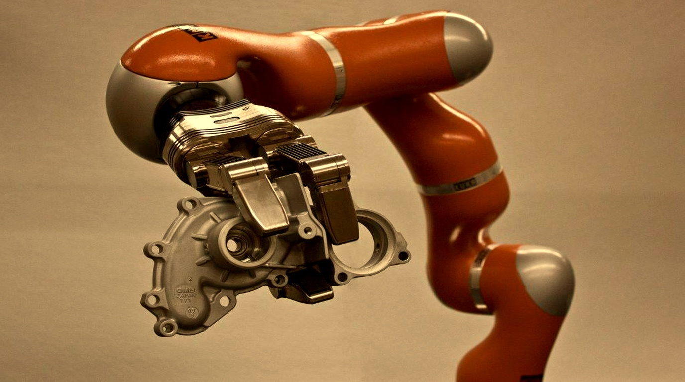

Fei-Fei Li's World Labs Launches Spatial-1: First Real-Time Interactive 3D World Foundation Model Bridging Generative AI and Robotics

STANFORD & PALO ALTO, CA — September 21, 2026 — While language models mastered text and diffusion models transformed 2D video, artificial intelligence has long remained fundamentally blind to the physical mechanics of the three-dimensional universe. Today, World Labs, the "spatial intelligence" company founded by computer vision pioneer Dr. Fei-Fei Li, announced Spatial-1—the first foundational Large World Model (LWM) engineered to generate, simulate, and manipulate persistent 3D interactive environments in real time.
Rather than predicting flat pixels on a 2D screen, Spatial-1 builds an explicit, physically grounded neural representation of 3D space: volume, depth, mass distribution, material friction, and object persistence. From a single photograph or natural-language prompt, Spatial-1 reconstructs complete 3D environments that autonomous robots and embodied agents can navigate, inspect from any camera angle, and manipulate according to Newtonian physics.
1. From Flat Pixels to Spatial Intelligence
Standard video generation models can produce astonishingly cinematic clips, but their understanding of reality is paper-thin: turn the camera around, and objects vanish; push a glass off a table, and it morphs into water instead of shattering.
Spatial-1 overcomes these limitations by decoupling semantic understanding from 3D geometric synthesis:
- Continuous Volumetric Persistence: Objects retain their exact physical coordinates, bounding volumes, and structural identities even when completely occluded behind walls or furniture.
- Zero-Shot Sim-to-Real Transfer: Humanoid robots and robotic arms can practice tens of thousands of complex manipulation tasks—such as folding laundry, assembling circuit boards, or navigating cluttered warehouses—entirely inside Spatial-1's synthetic world before executing actions on physical hardware.
- Interactive Real-Time Generation: Employs native 3D Gaussian Splatting combined with differentiable physics engines, rendering at 90 frames per second on enterprise GPUs.
"Language is a breathtaking invention, but intelligence did not evolve to talk—it evolved to survive, navigate, and shape a physical, 3D world. Spatial-1 is our foundational leap to endow AI with true spatial intelligence, bridging the digital intellect with embodied robotics."
World Labs Spatial-1 Architecture Highlights
2. The Foundation of the Physical AI Revolution
Leading robotics developers and industrial manufacturers have already begun deploying Spatial-1 across automated warehousing, surgical robotics, and consumer humanoid prototypes. By generating limitless high-fidelity spatial scenarios—complete with rare edge cases such as sudden slippery spills or tumbling obstacles—Spatial-1 accelerates robot training timelines by orders of magnitude while reducing physical testing risks to zero.
The model also opens revolutionary avenues for spatial computing headsets and game development, allowing creators to speak an entire interactive virtual world into existence with photorealistic materials and realistic acoustics.
3. Looking Ahead with SyncFlo
As spatial models merge with conversational agents, future digital assistants will not just advise users over text—they will comprehend the physical rooms users inhabit, anticipating needs and coordinating seamlessly with smart home robotics and spatial peripherals.
SyncFlo is tracking the convergence of spatial AI, multi-modal reasoning, and autonomous agents to build synchronized workflows that bridge digital knowledge with real-world execution.